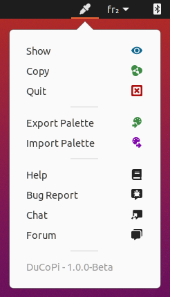

DuCoPi - The Duduf Color Picker¶
DuCoPi is a simple color picker and color palette.
With DuCopi, no matter what is your current application, you always keep the colors you need in a simple palette, always available. And you can always pick any other color from the selector or from any pixel of your screen.
- It stays at hand, always available when you need it.
- It can pick any color on your screen.
- It automatically copies your selected color’s hex code
- It keeps a color palette for you (a list of custom colors)
- It is able to import and export this palette (in a Gimp/Inkscape format)
Hint
The best way to use it is to add it to your startup applications.
Basic use¶
Just click on the eyedropper icon in your system tray, or select “show” from the menu. Choose your color, click ok to copy it.

 Custom palette¶
Custom palette¶
The swatches on the lower left part are your custom palette. Select a swatch, change the color, and click Add to custom colors to keep this color in the selected swatch. Click ok to validate and save your palette.
 Import /
Import /  Export palette¶
Export palette¶
You can export the current palette by choosing Export Palette in the menu. It is saved as a .gpl file, which is the format used by The Gimp and Inkscape too.
Palettes can also be imported by choosing Import Palette in the menu. For now, only .gpl files are supported.
Gimp Palettes (.gpl) files are very simple text files you can edit by yourself if you need. Each line after the # character represent a swatch in the palette.They store red, green, blue values (as 8 bits integers) and a custom name.
This is a Gimp Palette example:
GIMP Palette Name: RxUI Tints # 0 162 163 Dark Cyan 16 104 142 Dark Blue 62 139 69 Dark Green 129 9 173 Dark Purple 132 44 83 Dark Pink 132 179 48 Dark Citrus 172 16 16 Dark Red 0 162 163 Light Cyan 131 211 246 Light Blue 138 216 145 Light Green 213 136 241 Light Purple 216 255 140 Light Citrus 236 215 24 Yellow 241 136 186 Light Pink 249 105 105 Light Red
License¶
Software¶
The software this documentation is referring to is licensed under the GNU General Public License.
Copyright (C) 2020 Nicolas Dufresne and Contributors.
This program is free software; you can redistribute them and/or modify them under the terms of the GNU General Public License as published by the Free Software Foundation; either version 3 of the License, or (at your option) any later version.
This program is distributed in the hope that it will be useful, but WITHOUT ANY WARRANTY; without even the implied warranty of MERCHANTABILITY or FITNESS FOR A PARTICULAR PURPOSE. See the GNU General Public License for more details.
You should have received a copy of the GNU General Public License along with this program . If not, see http://www.gnu.org/licenses/.

Icons and other graphical elements¶
All graphical elements, especially icons, are from RxUI by Nicolas Dufresne and RxLaboratory are licensed under CC BY-NC-SA 4.0.
Copyright (C) 2021 Nicolas Dufresne and Contributors.


This Documentation¶
Copyright (C) 2020 Nicolas Dufresne and Contributors.
Permission is granted to copy, distribute and/or modify this document under the terms of the GNU Free Documentation License, Version 1.3 or any later version published by the Free Software Foundation;
with no Invariant Sections, no Front-Cover Texts, and no Back-Cover Texts.
A copy of the license is included in the section entitled “Documentation License”.